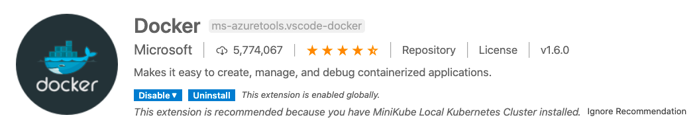
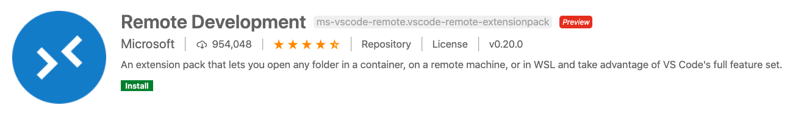
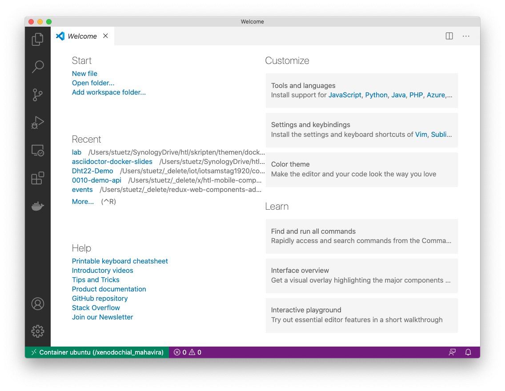
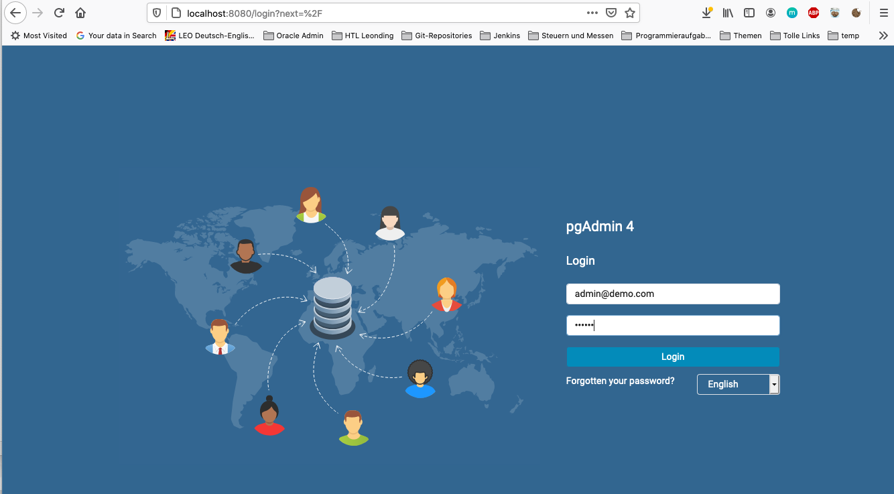
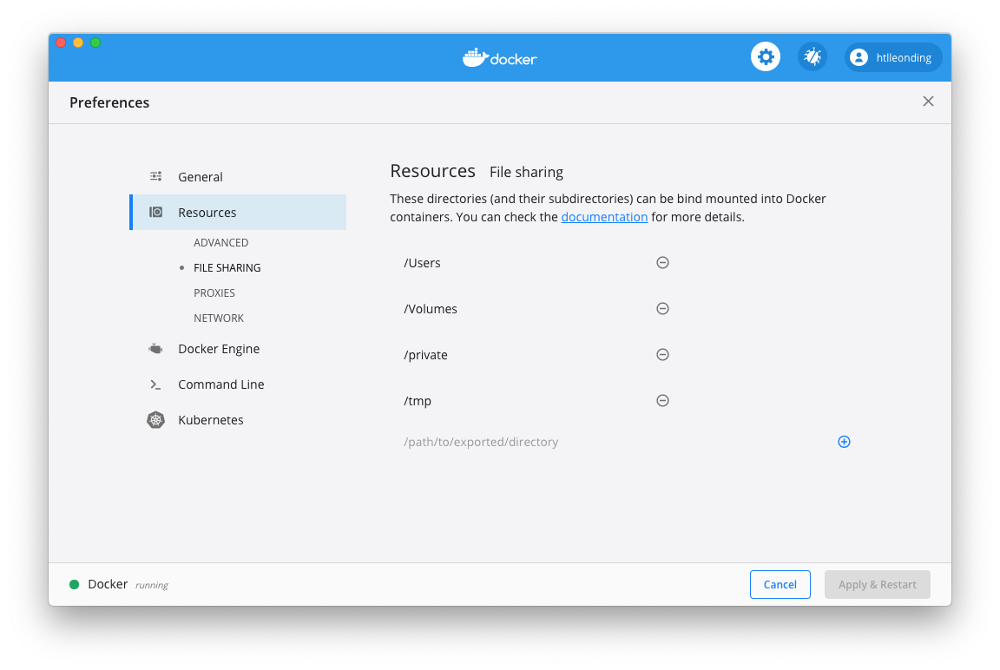

1. What is Docker?
-
Frage: Was wäre, wenn es kein Docker gäbe
-
Wir müssten für alles, einen eigenen Server aufsetzen
-
-
Es können verschiedene Linux-Distributionen als Host und im Docker verwendet werden
-
Es werden die Kernel-Funktionen geteilt
-
-
Jeder Linux-Container hat einen Namespace
-
vergleichbar mit Scheuklappen
-
es gibt zB nur ein virtuelles Netzwerk. Jeder Container sieht nur dieses Netzwerk.
-
Container run in user space and use kernel of host
-
Docker builds on Linux Containers (LXC)
-
-
Nachteil von Docker-Containern zu virtuellen Maschinen
-
Die Trennung ist nicht so hart → Sicherheitsaspekte
-
Virtuelle Maschinen sind sicherer.
-
"Die Wand zwischen Host und Docker-Container ist bei Docker-Containern nicht so dick"
-
Virtuelle Maschine: Eigenes Haus mit eigener Zufahrt
-
Docker-Container: Wie Eigentumswohnung
-
-
Wenn Inhalt trusted oder semi-trusted → Docker-Container
-
Wenn Inhalt untrusted → Virtuelle Maschinen oder gar keine Virtualisierung
-
Mann kann Host-OS und Docker-Container-OS kann man nicht mischen
-
nur Win-Win oder Linux-Linux
-
-


-
Vorteile
-
Fast
-
Boot time
-
-
Small
-
Agile
-
Docker-in-Docker
-
-
Portabel
-
Immutable
-
Server werden nicht mehr gepatcht
-
Analogie: Hauskatze vs Kühe in Stall eines bäuerlichen Betriebs
-
-
-
-
Windows-Subsystem
-
(Vollwertiger) Kernel, der auch auf Windows zugreifen kann
-
Speziell für Schüler ist WSL brauchbar
-
Aus dem Microsoft-Store
-
Use the WSL 2 based engine → dann braucht man die Hyper-V Virtualiserung nicht mehr
-
Docker Toolbox ist veraltet (Legacy) und sollte nicht mehr verwendet werden → Docker Community Edition bzw Docker Desktop verwenden
-
Docker Desktop funktioniert nun auch auf Windows Home
-
-
Zugriff auf lokale Festplatte: /mnt/..
-
man kann auch Windows Programme starten zB
calc -
Windows Terminal (wt) im File Explorer oben eingeben (in Adressleiste)
-
2. Docker’s Technical Components
-
Linux Container Format
-
Isolation Layers
-
Logging
-
Interactive shell
-
Harry-Potter-Programmieren: kein SSH usw
-
-
Docker Daemon
-
bietet nach außen eine RESTful API an, mit der man Container steuern kann
-
Sämtliche Kommandos laufen über die REST-API
-
Kleines NodeJS, Quarkus oder c# Programm zum starten eines Containers
-
auch mit Insomnia, Postman usw möglich
-
-
-
Clients
-
Docker Dashboard
-
Einfache GUI zum Starten, Stoppen und Review von Docker
-
-
Plugins in VSCode, IntelliJ, …
-
3. What to Use Docker For?
-
Make dev/test/prod-cycle more productive
-
Developers build containers, not apps
-
Containerize build-, test- and CI-tools
-
-
Segregation of Duties
-
Klarere Abgrenzung der Aufgabenbereiche in der Wirtschaft
-
Früher Admin → heute eher nicht mehr
-
Ein Dev kümmert sich um die Apps (die in Containern laufen)
-
Ein Ops kümmern sich um den Betrieb der Container
-
-
-
Microservices
-
Isolieren Dienste (Services)
-
Konsistent über die Phasen (stages): dev/test/prod
-
Mit Docker können viele Aspekte von verteilten Systemen geübt werden
-
-
-
Testen auch komplexer Umgebungen lokal
-
Containers sind leichtgewichtig
-
4. Lab
docker info
docker run -it --rm ubuntu (1) (2)| 1 | -it … interactive terminal |
| 2 | --rm … remove container after stopping (exiting the shell) |
| Achte auf die Geschwindigkeit (beim Start) des Docker Containers |

| Tool im VSC → Remote Development |

-
Den Docker Container im VSC links oben mit rechter Maustaste anklicken
-
Attach to Containeranklicken

5. Docker Cluster Solutions
-
Docker Swarm (wird kaum verwendet)
-
Kubernetes
-
Azure Kubernetes Service (AKS)
-
soll für Schüler kostenfrei sein,
-
nur die virtuellen Maschinen sind kostenpflichtig
-
Azure Sponsorship
-
100 Doller = 100 Euro, hartes Limit, kann nicht überzogen werden
-
wenn man eine Bestätigung (Schülerausweis) hochlädt, kann es sein, dass man jählich 100 $ bekommt
-
für Projekte eher nicht geeignet
-
ALs Lehrer kann man sich auf azure.com einen free-account anlegen
-
Man muss Kreditkarte hinterlegen
-
nach 30 Tagen unbedingt löschen → Im Kalender eintragen
-
-
6. Access Docker Remotely
-
Man kann im EDV Saal einen Linux Rechner mit einem Docker-Daemon betreiben
-
Die Clients müssen nur eine Umgebungsvariable setzen und brauchen dann keine Root Rechte
// Set environment variable (secure by default)
export DOCKER_HOST=tcp://40.68.81.114:2375
docker info
docker ps| Diese Lösung NIE, NIE, NIE ungeschützt im Internet verwenden https://docs.docker.com/engine/security/https/ |
-
Man braucht dann die Docker-Client-Tools
-
nur downloaden und entpacken
-
nichts muss installiert werden
-
7. Diverse Befehle
docker ps
docker ps -a
docker ps --no-trunc
docker run -it --rm --name my-ubuntu ubuntu
docker attach my-ubuntu # wenn man eine interaktive shell schließt, kann man wieder darauf connecten
docker container list
docker container ls
docker container ls -a
docker rm <container-id>
docker rm my-ubuntu
docker rm -f my-ubuntu # löscht einen laufenden Container
docker top
docker run -d --name my-timer ubuntu /bin/bash -c "while true; do date; sleep 1; done"
docker inspect network7.4. Übungen
docker run -d -p 8080:80 nginx:alpinedocker run -d -p 8080:80 --name my-nginx nginx (1)
docker exec -it my-nginx /bin/bash (2)
cd /usr/share/nginx/html (3)
ls -l
echo hello world > index.html
cat index.html| 1 | starten des Servers → http://localhost:8080 |
| 2 | Zugriff auf Shell des Containers |
| 3 | in /usr/share/nginx/html liegen die statischen Dokumente |
8. Docker Networking
8.1. Access Containers from inside Docker Network


-
bridge: Standard-Network
-
none: kein Netzwerk
-
host: hängt im Netzwerk des hosts
# Terminal 1
docker run -d -p 8080:80 --name my-nginx nginx
# Terminal 2
docker run -it --rm --name my-ubuntu ubuntu
# Terminal 3
docker inspect my-ubuntu
docker inspect my-nginxInstall curl in Terminal 3 and access nginx with name (doesn’t work) and internal ip (works)
8.2. Create Docker Network
docker network create -d bridge my-isolated-net
docker inspect my-isolated-net# Terminal 1
docker run -d -p 8080:80 --net=my-isolated-net --name webserver nginx:alpine
# Terminal 2
docker run -it --rm --net=my-isolated-net --name my-ubuntu --link webserver:myserver ubuntu
# Terminal 3
docker inspect webserver
docker inspect my-ubuntu
apt-get update
apt-get install curl
curl webserver # shows index.htmldocker run -d --net=host ubuntu9. docker-compose
-
docker run …kann lang und unübersichtlich werden -
in
docker-compose.ymlkann der Aufruf sauber durchgeführt werden -
Aufruf mit
docker-compose up
10. Lab: Postgre-sql

-
Die erstellte Tabelle in pg-admin

version: "3.8"
services:
pg-db:
image: postgres
environment:
POSTGRES_PASSWORD: secret
pg-admin:
image: dpage/pgadmin4
environment:
PGADMIN_DEFAULT_EMAIL: admin@demo.com
PGADMIN_DEFAULT_PASSWORD: secret
PGADMIN_LISTEN_PORT: 80
ports:
- "8080:80"
links:
- "pg-db:pg-db"10.1. Minecraft Übung mit Docker
Minecraft Server in Docker mit verschiedenen Konfigurationen hochfahren
10.2. Volume Demo
docker run --rm \
-v ${PWD}/website:/usr/share/nginx/html:ro \
-p 8080:80 \
--name webserver \
nginx:alpine
-
Windows-Volumes können in einen Linux Docker grundsätzlich gemounted werden
-
für Text- und Konfigurationsdateien
-
jedoch nicht für Datenbankdateien
-
-
Im Produktivbetrieb ist immer eine Versionsnummer für das Image anzugeben
| Semantische Versionierung: https://semver.org/lang/de/ |
const greetingParagraph = document.getElementById('greeting') as HTMLParagraphElement;
greetingParagraph.innerText = "Hello Docker";docker run --rm \
-d \
-v ${PWD}:/app \
-w /app \
node:alpine npx tsc --watch#[source,bash]
docker run --rm \
-v ${PWD}:/app \
-w /app \
-p 3000:3000 -p 3001:3001
node:alpine npx browser-sync start --server --watch
-
-v- Syntax ist veraltet, jetzt--mount
11. Lab 030 - Docker Volumes
docker run -d \
-e POSTGRES_PASSWORD=secret \
-e PGDATA=/pgdata \
--net pg-net \
-v ${PWD}/pgdata:/pgdata \
--name pg-db postgresdocker volume create dbstoredocker run -d \
-e POSTGRES_PASSWORD=secret \
-e PGDATA=/dbdata \
--mount 'type=volume,src=dbstore,dst=/dbdata' \
--name pg-db \
postgresdocker run --rm \
--mount 'type=volume,src=dbstore,dst=/dbdata' \
-w /dbdata ubuntu /bin/bash -c "ls -la"docker run --rm \
--mount 'type=volume,src=dbstore,dst=/dbdata' \
--mount 'type=bind,src=/home/rainer/backup,dst=/backup' \
ubuntu tar cvf /backup/backup.tar /dbdata
-w /dbdata ubuntu /bin/bash -c "ls -la"
docker run --rm \ --mount 'type=volume,src=dbstore,dst=/dbdata' \ --mount 'type=bind,src=/tmp/backup,dst=/backup' \ ubuntu tar cvf /backup/backup.tar /dbdata ls –la /tmp/backup/
In MacOS the source-binding-folder is supposed to have write-permission and must therefore be listed in Docker FILE SHARING

12. Docker Images


Ein Docker Image ist wie eine Klasse:
-
es ist wie ein Muster, eine Vorlage
-
mit einem Image alleine kann man nichts anfangen
-
von einem Image können mehrere Container erstellt werden
-
Ein Image verbraucht keine CPU-Zeit, da es nicht läuft
docker images
docker run -it ubuntu (1)
echo hallo > greet.txt
exit
docker ps -a (2)| 1 | Ein Container wird erstellt |
| 2 | man sieht der Container ist gestoppt |
12.1. Docker Commit
| wird in der Praxis nicht/kaum verwendet, nur hier zu Demonstrationszwecken |
docker commit <hex> ubuntu-with-greeting
docker images
docker history ubuntu-with-greeting:latest
docker run -it --rm ubuntu-with-greetingIMAGE CREATED CREATED BY SIZE COMMENT 5cc3b3847f03 2 minutes ago /bin/bash 34B 9140108b62dc 2 weeks ago /bin/sh -c #(nop) CMD ["/bin/bash"] 0B <missing> 2 weeks ago /bin/sh -c mkdir -p /run/systemd && echo 'do… 7B <missing> 2 weeks ago /bin/sh -c [ -z "$(apt-get indextargets)" ] 0B <missing> 2 weeks ago /bin/sh -c set -xe && echo '#!/bin/sh' > /… 811B <missing> 2 weeks ago /bin/sh -c #(nop) ADD file:da80f59399481ffc3… 72.9MB
-
Docker ist in Zwiebelschichten aufgebaut
-
Man kann zusätzliche Funktionalität hinzufügen
-
zB Base Image mit Puppeteer (headless chrome) anreichern
-
-
eigene Images für Testen usw erstellen
12.2. Dockerfile
-
Dockerfile ist eigentlich eine eigene "Programmiersprache" (nicht wirklich, sondern eine deklarative Sprache ohne Schleifen usw.)
12.2.1. Lab
-
Create folder
mkdir hello-dockerfile cd hello-dockerfile
-
Open in your IDE and create a file named
Dockerfile
FROM ubuntu RUN echo Hallo > greet.txt
-
Start the build
docker build -t ubuntu-from-dockerfile .
Sending build context to Docker daemon 7.68kB Step 1/2 : FROM ubuntu ---> 9140108b62dc Step 2/2 : RUN echo Hallo > greet.txt ---> Running in 686d0f7bd479 Removing intermediate container 686d0f7bd479 ---> de4bd9e4a79a Successfully built de4bd9e4a79a Successfully tagged ubuntu-from-dockerfile:latest
| Dockerfile commands are easy cheesy (RUN, …), but the shell-scripts are often complicated |
-
Jedes RUN ist eine "Zwiebelschicht"
12.3. Häufigste Befehle
-
FROM
-
RUN um Shell Scripts zu starten
-
COPY
12.3.1. COPY
Create a file greet2.txt in yout local folder
FROM ubuntu RUN echo Hallo > greet.txt COPY *.txt /
-
mit COPY kann man aus dem Verzeichnis in dem das Dockerfile liegt, Dateien in das Image kopieren
-
mit einem Parameter kann dieses Verzeichnis geändert werden
docker run --rm ubuntu-from-dockerfile cat /hello2.txt
Sending build context to Docker daemon 11.78kB Step 1/3 : FROM ubuntu ---> 9140108b62dc Step 2/3 : RUN echo Hallo > greet.txt ---> Using cache ---> de4bd9e4a79a Step 3/3 : COPY hello2.txt / ---> Using cache ---> dfcea995e3ed Successfully built dfcea995e3ed Successfully tagged ubuntu-from-dockerfile:latest
-
Durch gezieltes Erstellen mehrerer RUN-Statements kann man
-
Mit .dockerignore können Dateien ausgeschlossen werden, dh sie werden mit COPY nicht übertragen
FROM ubuntu RUN apt-get update RUN echo Hallo > greet.txt WORKDIR app2 COPY *.txt .
-
Problem: Hier würde er bei einem apt-get update das gecachte Image verwenden.
-
Workaround 1 (dirty): verwende ENV Variable
FROM ubuntu ENV date='2020-10-13' RUN apt-get update RUN echo Hallo > greet.txt WORKDIR app2 COPY *.txt .
-
Workaround 2: Cache löschen
docker build -t ubuntu-from-dockerfile . --no-cache
-
--build-arg: Parameter für Dockerfile
12.3.2. CMD
-
Ist jenes Statement, welches ausgeführt wird, wenn der Container gestartet wird
zB CMD ["/bin/bash"]
-
Das Command wird erst beim Start des Containers ausgeführt, nicht beim Build des Images
13. Lab 040 - nodejs
mkdir docker-node-express
docker run --rm -v ${PWD}:/app -w /app node npm init -y
docker run --rm -v ${PWD}:/app -w /app node npm install express hbs (1)
docker run --rm -v ${PWD}:/app -w /app node npm install -D @types/express copyfiles typescript
docker run --rm -v ${PWD}:/app -w /app node npx tsc --init
| 1 | install express und handlebar https://handlebarsjs.com/ |
node_modules/ dist/
docker run --rm -v ${PWD}:/app -w /app node npm run build
docker run --rm -v ${PWD}:/app -p 8080:8080 -w /app node npm start

-
Dockerfile muss nicht im build-Context enthalten sein
-
.dockerignore muss nicht im build-Context enthalten sein
FROM node WORKDIR /app COPY . . RUN npm install && npm run build
docker build -t myexpress .
-
es gibt kein volume mounting , die app ist bereits hineingebacken
-
Kritikpunkte
-
der gesamte Ordner wird mit
COPY . .in das Image kompileiert -
der gesamte typescript-Ordner ist im Image drinnen
-
-
→ Daher wird der build-Prozess in mehrere Teile zerteilt
13.1. Multi-Stage-Build
FROM node AS BUILDER WORKDIR /app COPY . . RUN npm install && npm run build (1) FROM node:alpine WORKDIR /app COPY --from=builder /app/dist . (2) COPY --from=builder /app/package.json . (3) RUN npm install --only-prod EXPOSE 8080 (4) CMD ["node","app.js"]
| 1 | hier könnte ein Image mit meinen Unit-Tests sein |
| 2 | aus dem builder-image werden die Ergebnisse kopiert |
| 3 | zu Dokumentationszwecken wird der Port angegeben
|
docker build -t myexpress .
or
docker build -t myexpress . --no-cache
docker images
docker run -d -p 8080:8080 myexpress
13.3. Upload to Docker Registry (Docker Hub)
docker tag myexpress htlleonding/myexpress
docker images
REPOSITORY TAG IMAGE ID CREATED SIZE htlleonding/myexpress latest 42fb7a80c3ed About an hour ago 201MB myexpress latest 42fb7a80c3ed About an hour ago 201MB ....
docker login
docker push htlleonding/myexpress
14. Lab - Reverse Proxy

-
Die Verwendung eines API Gateways verhindert Probleme mit CORS (Cross-Origin-Resource-Sharing)
version: "3.8"
services:
backend:
build: ./backend
ports:
- "8081:80"
networks:
- mynet
frontend:
build: ./frontend
networks:
- mynet
proxy:
build: ./proxy
networks:
- mynet
ports:
- "8080:80"
networks:
mynet:
driver: bridgeevents {
}
http {
upstream ui {
server frontend;
}
upstream api {
server backend;
}
server {
listen 80;
location /api {
proxy_pass http://api;
}
location / {
proxy_pass http://ui;
}
}
}